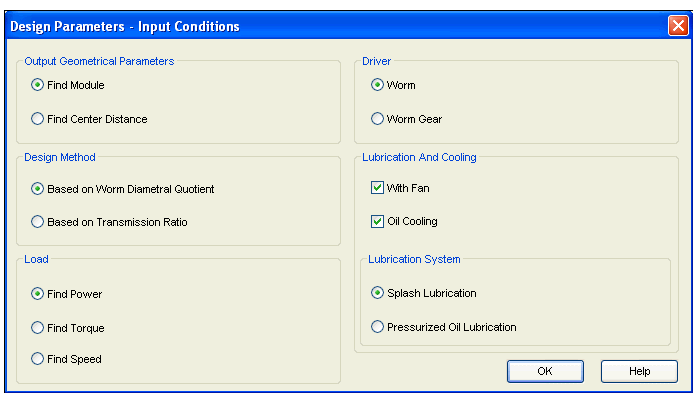
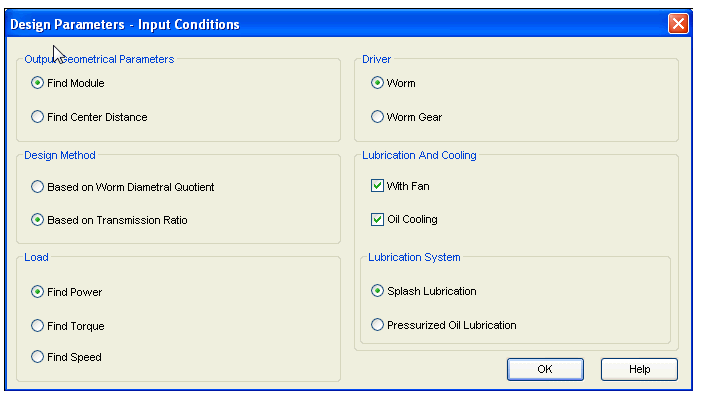
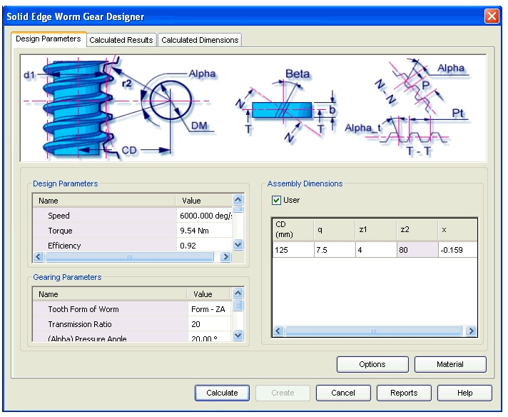
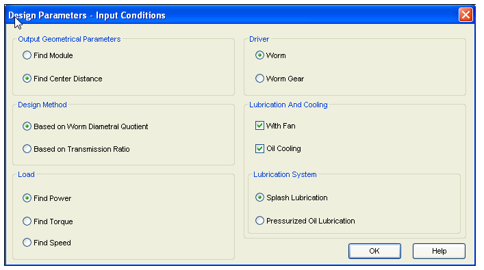
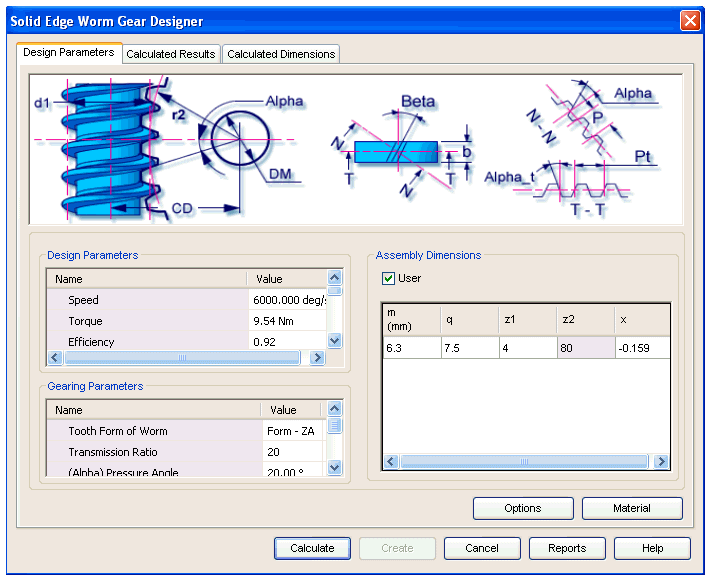
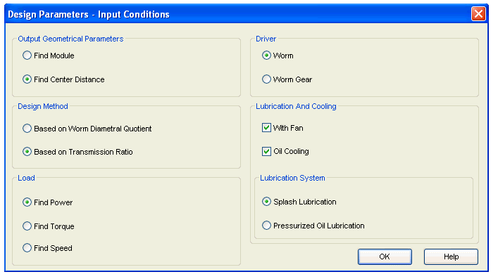

Worm Gear user specific assembly dimensions
The User Option is given on Design Parameters tab to select the User Specific Assembly Dimensions for Worm Gear.
To enter the User Specific Assembly Dimensions you have to check the User Option in Assembly Dimensions.
This option gives four different modes of Calculations based on Input Conditions.
-
Select Find Module from Output Geometrical Parameters and Select Based on Worm Diametral Quotient from Design Method.

With this set of Input Conditions you can enter Center Distance (CD), Transmission Ratio (i), No. Of teeth on Worm (z1) and Unit Correction (x) in Assembly Dimensions. In Gearing Parameters you can enter Worm Diametral Quotient (q).
-
Select Find Module from Output Geometrical Parameters and Select Based on Transmission Ratio from Design Method.

With this set of Input Conditions you can enter Center Distance (CD), Worm Diametral Quotient (q), No. Of teeth on Worm (z1) and Unit Correction (x) in Assembly Dimensions. In Gearing Parameters you can enter Transmission Ratio (i).

-
Select Find Center Distance from Output Geometrical Parameters and Select Based on Worm Diametral Quotient from Design Method.

With this set of Input Conditions you can enter Module (m), Transmission Ratio (i), No. Of teeth on Worm (z1) and Unit Correction (x) in Assembly Dimensions. In Gearing Parameters you can enter Worm Diametral Quotient (q).

-
Select Find Center Distance from Output Geometrical Parameters and Select Based on Transmission Ratio from Design Method.

With this set of Input Conditions you can enter Module (m), Worm Diametral Quotient (q), No. Of teeth on Worm (z1) and Unit Correction (x) in Assembly Dimensions. In Gearing Parameters you can enter Transmission Ratio (i).
How do I
Worm Gear tutorialLearn more
Worm Gear moduleUsing the Worm Gear module
Worm Gear Design Parameters tab
Worm Gear Calculated Results tab
Worm Gear Calculated Dimensions tab
Worm Gear Material Selection
How to (Worm Gears)
Frequently asked questions (Worm Gears)
Standards used for Worm Gear calculations